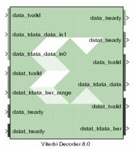

|
|
Data encoded with a convolution encoder may be decoded using the Xilinx Viterbi decoder block. This block adheres to the AMBA® AXI4-Stream standard.There are two steps to the decode process. The first weighs the cost of incoming data against all possible data input combinations; either a Hamming or Euclidean metric may be used to determine the cost. The second step traces back through the trellis and determines the optimal path. The length of the trace through the trellis can be controlled by the traceback length parameter.The decoder achieves minimal error rates when using optimal convolution codes; the table below shows various optimal codes. For correct operation, convolution codes used for encoding must match with that for decoding.
V8.0